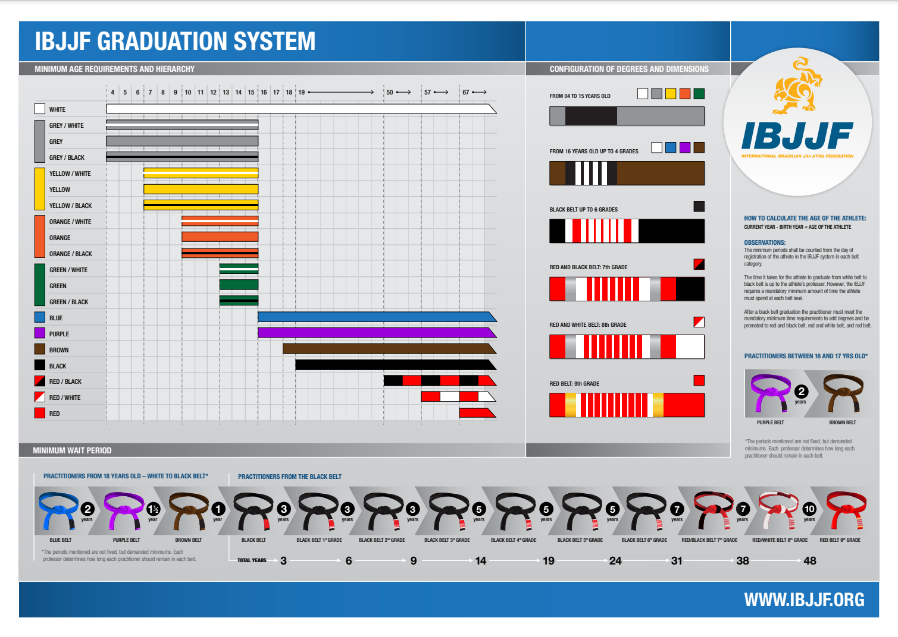

Cześć! Nazywam się Alex Skukowski i trenuję brazylijskie jiu-jitsu od 7. roku życia. Teraz mam 14 lat i nie wyobrażam sobie życia bez BJJ. To nie jest dla mnie tylko sport – to moja pasja, mój styl życia, coś, co towarzyszy mi każdego dnia.
BJJ to coś, co mnie wciągnęło na 100%. To nie jest sport, który trenuję tylko dla medali czy pasów – robię to, bo naprawdę to kocham. Każdy trening daje mi coś nowego: technikę, zmęczenie, radość, czasem frustrację – ale zawsze poczucie, że idę do przodu.
Lubię w BJJ to, że sama siła nic nie daje, jeżeli nie ma się techniki. Możesz być mniejszy, a i tak wygrać, jeśli dobrze to rozegrasz. To jak szachy w ruchu – tylko że zamiast figur masz swoje ciało.
Moja przygoda z BJJ zaczęła się w klubie Berserker's Team Prawobrzeże, gdzie trenowałem pod okiem Łukasza Rewersa. To tam stawiałem pierwsze kroki na macie i zakochałem się w tym sporcie.
Od około roku trenuję w BT Gymie, czyli w głównej siedzibie Berserkerów. Tam rozwijam się dalej, szlifuję technikę i walczę z coraz lepszymi zawodnikami. Brazylijskie jiu-jitsu trenuję obecnie pod okiem Pawła Nędzi, a dodatkowo chodzę na MMA do Michała Fijałki i zapasy do Wojciecha Wilka.
W brazylijskim jiu-jitsu pasy nie zależą tylko od umiejętności, ale też od wieku. IBJJF, czyli Międzynarodowa Federacja BJJ, określa dokładnie, kto może mieć jaki pas, w jakim wieku.
Ja teraz powinienem mieć zielono-czarny pas z 4 belkami, czyli najwyższy możliwy u dzieci, ale od prawie 2 lat nie byłem na żadnych nominacjach.
Przez lata zebrało się sporo walk, startów i medali, ale dla mnie najważniejsze są zawody ADCC — to one najbardziej mnie kręcą.
ADCC, czyli Abu Dhabi Combat Club, to największa i najbardziej prestiżowa organizacja turniejów submission grapplingu na świecie. Różni się od klasycznego BJJ w stylu IBJJF tym, że:
Startowałem też w wielu innych zawodach, m.in. pod IBJJF i w turniejach lokalnych, gdzie zdobywałem doświadczenie i podium. Ale to właśnie na macie ADCC czuję się sobą.
Jeśli chcesz zobaczyć moje wyniki, zdjęcia, filmiki z walk i co u mnie aktualnie się dzieje — zapraszam na mojego Instagrama:
👉 @alex_skukowski